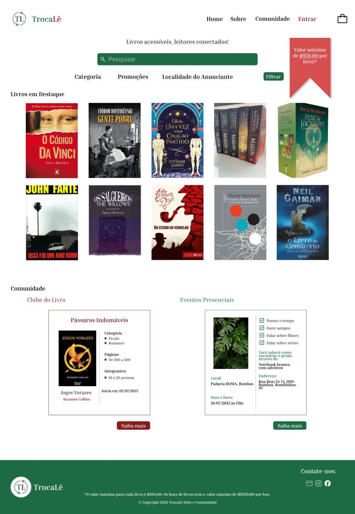
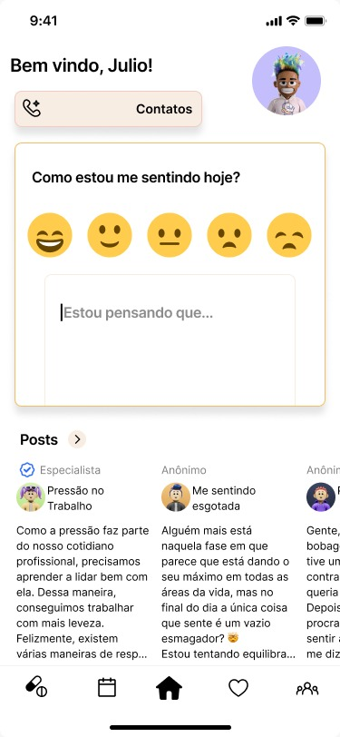
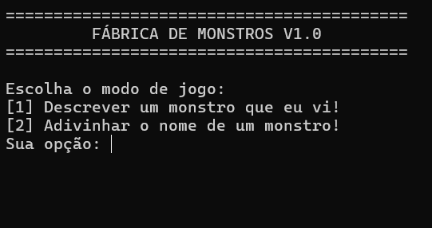

Olá, eu sou
Transformo curiosidade em código
Sou estudante de Análise e Desenvolvimento de Sistemas na UNIVALI, e minha trajetória nasceu de uma curiosidade genuína que se tornou minha grande motivação diária. Minha jornada na tecnologia começou em 2024, explorando fundamentos via YouTube e consolidando meus primeiros passos na Alura, onde conquistei minha certificação inicial em lógica e programação. Hoje, busco unir a base teórica da faculdade com a prática constante.
Utilizo o Figma para prototipação e UX/UI, dando vida às interfaces com HTML5, CSS3 e JavaScript. Meu foco é escrever códigos limpos, funcionais e responsivos, unindo a estrutura do software à melhor experiência para o usuário.

Meu primeiro contato com o Figma, onde desenvolvi protótipos de baixo, médio e alto nível para apresentar a ideia do meu site. O site consiste em um sebo digital com rede social integrada para promover encontros virtuais e presenciais de um grupo específico de pessoas: amantes de literatura!
Ver projeto
Desenvolvido com o Figma, esse protótipo mobile apresenta um aplicativo de gerenciamento de emoções, com registro de humor e diário integrado, além de possibilitar a configuração de despertador para a tomada de medicamentos.
Ver projeto
Desenvolvido em grupo na linguágem C, o projeto se propõe a ser um retrato falado e um jogo de adivinhas. O link leva para um compilador online e o projeto também pode ser conferido no meu repositório no GitHub, mais abaixo nesse site!
Ver projetoTecnologias e ferrammentas que utilizo
Posso somar ao seu time? Estou aberta a oportunidades!